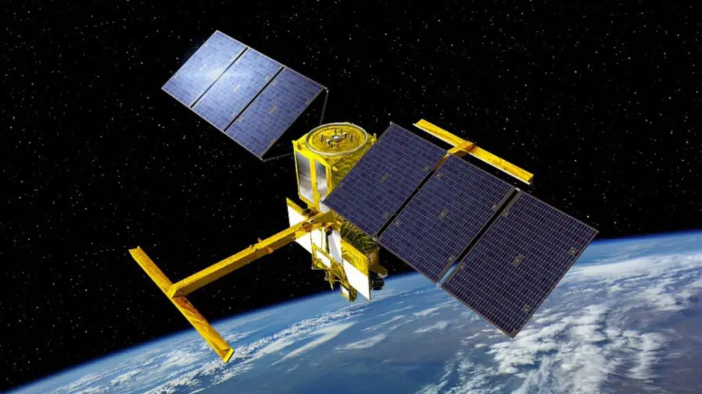
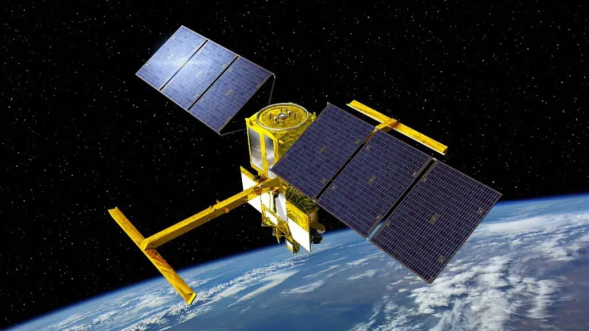

Surface Water and Ocean Topography (SWOT)
 

Launch: Dec 16th, 2022
Mission Duration: Three Earth Years
Retired: N/A
Launched on December 16, 2022, SWOT (Surface Water and Ocean Topography) is a satellite mission developed by NASA and CNES. It measures Earth's freshwater bodies and oceans with unprecedented precision, providing valuable data on sea levels, climate change, and hydrology, crucial for global environmental research and forecasting.